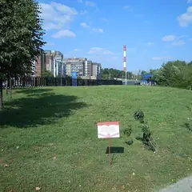
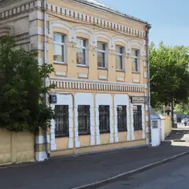
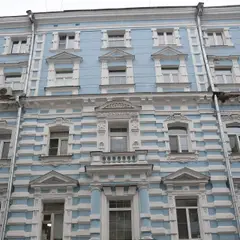
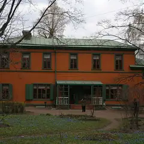
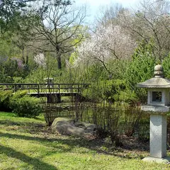
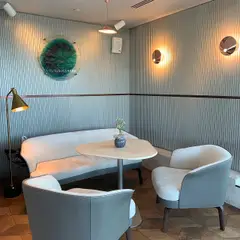
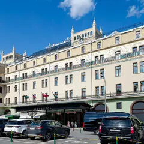
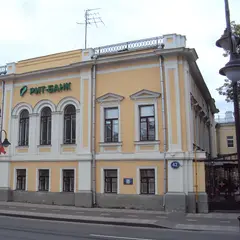
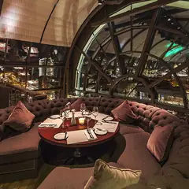
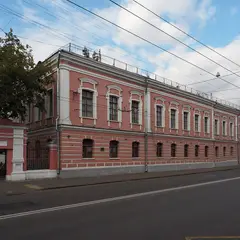

Подборку собрали 6 ноября, прошедшие события скрыты. Свежая афиша — на главной
Подборка для девичника · данные на 15 октября
Девичник в Москве: куда пойти с подругами
133 плана для девичника и вечера с подругами: бранчи и кофейни, спа и бани, мастер-классы, караоке и бары. Ниже — самые популярные места из этих планов (всего их 206) и 62 события на ближайшие две недели. Отметь пару вариантов и отправь ссылку подругам: каждая выберет, что ей нравится и когда удобно, — без двухсот сообщений в чате.
- 133 плана
- 206 мест
- 62 события
Планы для девичника 24 из 133
- Смотровая iCITY · Бесплатная смотровая и коворкинг · м. Шелепиха
- 18 минут пешкомBamboo.Bar · Ресторан с террасой
Встретить закат на бесплатной круговой смотровой iCITY, а потом спуститься в квартал на террасу Bamboo.Bar с зеленью и фонтанами — удобно прямо после работы.
Открыть план: Бесплатная смотровая и терраса в СитиПозвать сюда: Бесплатная смотровая и терраса в Сити
Фото: Дарья Симоненко, CC BY-SA 4.0 · Wikimedia Commons
- Красная площадь · Площадь · м. Площадь Революции
- 9 минут пешкомМетрополь · Ресторан в историческом отеле
Прогулка по Красной площади, а с 13 до 17 по воскресеньям — знаменитый бранч-буфет «Метрополя» под витражным куполом с фонтаном.
Открыть план: Воскресный бранч в «Метрополе»Позвать сюда: Воскресный бранч в «Метрополе»
Фото: mos.ru, CC BY 4.0 · Wikimedia Commons
- ГЭС-2 · Дом культуры · м. Кропоткинская
- 4 минуты пешкомKaraoke Pro · Караоке-клуб
Бесплатные выставки ГЭС-2, а потом через дорогу Karaoke Pro: акустика Nexo, барабаны и бэк-вокал, в пятницу — живая группа. Открыто с четверга по субботу с 20:00.
Открыть план: ГЭС-2 и караоке с живой группойПозвать сюда: ГЭС-2 и караоке с живой группой
Фото: Юрий Д.К., CC BY 4.0 · Wikimedia Commons
- Усачёвские бани · Баня · м. Фрунзенская
- 7 минут пешкомBlack Market · Бистро с бранчами
Женское отделение Усачёвских бань со свежим паром каждый час, а минут через семь — Black Market: драники с лососем, сырники и домашние десерты, по выходным бранчи.
Открыть план: Девичник: баня и бранч в ХамовникахПозвать сюда: Девичник: баня и бранч в Хамовниках
Фото: Ludvig14, CC BY-SA 4.0 · Wikimedia Commons
- Музей русского импрессионизма · Музей · м. Белорусская
- 1 минута пешкомБольшевик Лофт · Ресторан со стендапом
Коровин, Серов и Кустодиев в Музее русского импрессионизма, а в соседнем краснокирпичном корпусе бывшей фабрики «Большевик» — ужин и стендап в Большевик Лофт.
Открыть план: Импрессионисты и стендап на фабрикеПозвать сюда: Импрессионисты и стендап на фабрике
Фото: Sergey A. Demidov, CC BY 4.0 · Wikimedia Commons

- Ландшафтный парк «Митино» · Парк · м. Волоколамская
- 13 минут пешкомLuna · Караоке-клуб
Круг вокруг пруда в ландшафтном парке «Митино», а потом караоке Luna: диджей, кухня и звукорежиссёр, который выставит микрофон даже новичку.
Открыть план: Парк «Митино» и караоке рядомПозвать сюда: Парк «Митино» и караоке рядом
Фото: AVRS, CC BY-SA 3.0 · Wikimedia Commons
- Патриаршие пруды · Пруд и сквер · м. Маяковская
- 1 минута пешкомКиану · Коктейльный бар
Вечерний круг вокруг Патриарших прудов, а потом маленький бар «Киану», из окна которого видно пруд: коктейли, роллы и диджей до 6 утра.
Открыть план: Патрики и бар с видом на прудПозвать сюда: Патрики и бар с видом на пруд
Фото: Dimа, CC BY-SA 3.0 · Wikimedia Commons
- Сиреневый сад · Сад · м. Черкизовская
- 11 минут пешкомBrancho · Кафе завтраков
Утренняя прогулка по Сиреневому саду на Щёлковском шоссе, а потом Brancho со своей пекарней: шакшука или скандинавский завтрак с пастрами.
Открыть план: Сиреневый сад и шакшукаПозвать сюда: Сиреневый сад и шакшука
Фото: Kristy2906, CC BY-SA 4.0 · Wikimedia Commons

Аромапарения каждый час и общий спа-этаж с хаммамом в «Жар-Птице» у Савёловской, а потом винный ресторан Bravis с армянской душой у «Динамо».
Открыть план: Спа-этаж и армянский ужинПозвать сюда: Спа-этаж и армянский ужин
Фото здания: NVO, CC BY-SA 3.0 · Wikimedia Commons
- Театр Наций · Театр · м. Чеховская
- 7 минут пешкомMendeleev · Музыкальный бар
Громкая постановка в Театре Наций в здании театра Корша, а потом Mendeleev в кирпичных сводах бывшей типографии: в будни джаз и соул, в выходные DJ до 4 утра.
Открыть план: Театр Наций и бар в старой типографииПозвать сюда: Театр Наций и бар в старой типографии
Фото: Mike1979 Russia, CC BY-SA 3.0 · Wikimedia Commons
- Александровский сад · Сад · м. Александровский сад
- 12 минут пешкомСеверяне · Ресторан с завтраками и бранчами
Утро в Александровском саду до толп, а потом «Северяне» на Большой Никитской: камерный ресторан с дровяной печью открывается в 9, бранч по выходным лучше бронировать.
Открыть план: Утро у Кремля и бранч у печиПозвать сюда: Утро у Кремля и бранч у печи
Фото: Надежда Пивоварова, CC BY-SA 3.0 · Wikimedia Commons
- Усадьба Измайлово · Музей-усадьба · м. Партизанская
- 12 минут пешкомImmerscape · Квест с актёрами
Прогулка по острову усадьбы Измайлово мимо Покровского собора, а потом «Запретная дверь» в Immerscape: актрисы играют с порога и выручают, если совсем страшно.
Открыть план: Царский остров и «Запретная дверь»Позвать сюда: Царский остров и «Запретная дверь»
Фото: NVO, CC BY 3.0 · Wikimedia Commons

- Draw Up Studio · Арт-вечеринка · м. Китай-город
- 10 минут пешкомNouge · Винное бистро
Пишете картины, а потом идёте пить вино в старинную усадьбу.
Открыть план: Арт-вечеринка и бистроПозвать сюда: Арт-вечеринка и бистро
Фото здания: Александр Сигачёв, CC BY-SA 4.0 · Wikimedia Commons
- Краснопресненские бани · Баня и хамам · м. Улица 1905 года
- 18 минут пешкомHite · Корейский ресторан и караоке
Хамам и бассейн, а после — своя караоке-комната с грилем.
Открыть план: Баня, потом караокеПозвать сюда: Баня, потом караоке
Фото: Никонико962, CC BY-SA 4.0 · Wikimedia Commons
- Патриаршие пруды · Пруд и сквер · м. Маяковская
- 1 минута пешкомERWIN.Павильон · Ресторан на пруду
Неспешный круг вокруг пруда из «Мастера и Маргариты», а потом бранч в ресторане-павильоне Erwin прямо у пруда — он открыт с 9:00.
Открыть план: Бранч на ПатрикахПозвать сюда: Бранч на Патриках
Фото: Dimа, CC BY-SA 3.0 · Wikimedia Commons
- Музей Булгакова · Музей · м. Маяковская
- 8 минут пешкомPinch · Ресторан
Сначала «Нехорошая квартира» в Музее Булгакова, а потом восемь минут пешком до Pinch у Патриарших: завтраки там подают до 16:00, так что бранч получится в самый раз.
Открыть план: Булгаков и поздний бранчПозвать сюда: Булгаков и поздний бранч
Фото: Usolt, CC BY 3.0 · Wikimedia Commons
- Гоголевский бульвар · Бульвар · м. Кропоткинская
- 3 минуты пешкомИНО М2 · Гастропространство
Гоголевский бульвар и большое гастропространство в конструктивистском здании.
Открыть план: Бульвар и гастропространствоПозвать сюда: Бульвар и гастропространство
Фото: Panther, CC BY-SA 3.0 · Wikimedia Commons
- Винный базар · Винный бар · м. Трубная
- 10 минут пешкомSEMENOV · Караоке
Дегустация в «Винном базаре», а потом караоке с танцполом и кухней в 10 минутах пешком.
Открыть план: Вино и песниПозвать сюда: Вино и песни
Фото здания: Mike1979 Russia, CC BY-SA 3.0 · Wikimedia Commons
- Винзавод · Центр современного искусства · м. Чкаловская
- 10 минут пешкомArtplay · Дизайн-центр
Выставки в бывших цехах, дизайн-лавки и кофе — неспешная суббота.
Открыть план: Галереи Винзавода и ArtplayПозвать сюда: Галереи Винзавода и Artplay
Фото: Lite, CC BY-SA 4.0 · Wikimedia Commons
- Галерея Церетели · Музей · м. Парк культуры
- 16 минут пешкомНитка · Русская чайная
Зимний сад и скульптуры в особняке на Пречистенке, потом чаепитие в отдельной комнате «Нитки».
Открыть план: Галерея Церетели и русская чайнаяПозвать сюда: Галерея Церетели и русская чайная
Фото: Sigwald, CC BY-SA 4.0 · Wikimedia Commons
- Музей «Гараж» · Музей современного искусства · м. Парк культуры
- 25 минут пешкомНескучный сад · Парк
Современное искусство и книжный в «Гараже», а потом минут 25 пешком через Парк Горького в Нескучный сад — старые деревья, овраги и набережная без толпы.
Открыть план: Гараж и Нескучный садПозвать сюда: Гараж и Нескучный сад
Фото: Garage Museum of Contemporary Art, CC BY-SA 4.0 · Wikimedia Commons
- Петровский путевой дворец · Дворец · м. Петровский парк
- 19 минут пешкомBrunchy Brunch · Арт-бистро
Краснокирпичный дворец в псевдоготике у «Динамо» (внутрь только с экскурсией), а потом завтраки весь день и выставки молодых художников в Brunchy, 19 минут пешком.
Открыть план: Готический дворец и бранчПозвать сюда: Готический дворец и бранч
Фото: WM wm WM, CC BY-SA 4.0 · Wikimedia Commons
- ГЭС-2 · Дом культуры · м. Кропоткинская
- 15 минут пешкомМузеон · Парк
Выставки и кино в бывшей электростанции, потом прогулка вдоль реки до Музеона.
Открыть план: ГЭС-2 и набережнаяПозвать сюда: ГЭС-2 и набережная
Фото: Юрий Д.К., CC BY 4.0 · Wikimedia Commons

- Усадьба Толстого в Хамовниках · Музей · м. Парк культуры
- 13 минут пешкомУсадьба Трубецких · Парк
- 1 минута пешкомRébellion · Кафе
Дом и сад, где Толстой жил зимами, потом минут пятнадцать пешком до старых лип и пруда в усадьбе Трубецких, а рядом — завтраки и кофе в Rébellion.
Открыть план: Две усадьбы ХамовниковПозвать сюда: Две усадьбы Хамовников
Фото: A.Savin, CC BY-SA 3.0 · Wikimedia Commons


Места из этих планов 18 из 206
Красная площадь
Главная площадь страны: Кремль, Василий Блаженный, ГУМ и Исторический музей в одном кадре.
Подробнее и маршрут: Красная площадьПозвать сюда: Красная площадь
Фото: mos.ru, CC BY 4.0 · Wikimedia Commons
Большой Патриарший пер.
Пруд из «Мастера и Маргариты»: скамейки, кафе вокруг, зимой — каток.
Подробнее и маршрут: Патриаршие прудыПозвать сюда: Патриаршие пруды
Фото: Dimа, CC BY-SA 3.0 · Wikimedia Commons

Ботаническая ул., 4
Японский сад в Ботаническом: пагода, водопады и сакура весной. Вход платный.
Подробнее и маршрут: Японский садПозвать сюда: Японский сад
Фото: Carbonkidka, CC BY-SA 4.0 · Wikimedia Commons
Пресненская наб., 8, стр. 1
Ресторан в Москва-Сити с панорамной террасой, зеленью и фонтанами.
Подробнее и маршрут: Bamboo.BarПозвать сюда: Bamboo.Bar
Фото: BpbAlonka, CC BY-SA 3.0 · Wikimedia Commons

Страстной бул., 8А
Две звезды Michelin 2021
Фермерские продукты и вид на центр с седьмого этажа.
Подробнее и маршрут: Twins GardenПозвать сюда: Twins Garden
Фото: Tamara Ivanova-Issayeva, CC BY-SA 4.0 · Wikimedia Commons
Александровский сад
Сад вдоль Кремлёвской стены: Вечный огонь, Итальянский грот и смена почётного караула.
Подробнее и маршрут: Александровский садПозвать сюда: Александровский сад
Фото: Надежда Пивоварова, CC BY-SA 3.0 · Wikimedia Commons

Театральный пр., 2
Новое
Парадный зал отеля «Метрополь» под витражным куполом с фонтаном. По воскресеньям с 13 до 17 — знаменитый бранч-буфет, в остальные дни утром завтраки. Для особого повода.
Подробнее и маршрут: МетропольПозвать сюда: Метрополь
Фото: Никонико962, CC BY-SA 4.0 · Wikimedia Commons
Большая Садовая ул., 10
«Нехорошая квартира» №50, где жил Булгаков. Вт–вс, по четвергам до 21:00.
Подробнее и маршрут: Музей БулгаковаПозвать сюда: Музей Булгакова
Фото: Usolt, CC BY 3.0 · Wikimedia Commons
Крымский Вал, 2
Парк скульптур и прогулка по набережной Москвы-реки.
Подробнее и маршрут: МузеонПозвать сюда: Музеон
Фото: sailko, CC BY-SA 3.0 · Wikimedia Commons

ул. Пятницкая, 42
Отель-ресторан с садом, вермутерией и галереей в Замоскворечье. 9–00.
Подробнее и маршрут: РихтерПозвать сюда: Рихтер
Фото здания: Kemal KOZBAEV, CC BY-SA 4.0 · Wikimedia Commons
Ермакова Роща, 1, стр. 1
Круговая смотровая с видом на город и коворкинг с мягкими зонами — вход свободный.
Подробнее и маршрут: Смотровая iCITYПозвать сюда: Смотровая iCITY
Фото: Дарья Симоненко, CC BY-SA 4.0 · Wikimedia Commons
ул. Сокольнический Вал, 1
Большой парк с лучевыми аллеями, розарием, прокатом и выходом в лес.
Подробнее и маршрут: СокольникиПозвать сюда: Сокольники
Фото: Alexx Zimin, CC BY-SA 4.0 · Wikimedia Commons
ул. Льва Толстого, 21
Деревянный дом, где Толстой жил зимами, и сад при нём.
Подробнее и маршрут: Усадьба Толстого в ХамовникахПозвать сюда: Усадьба Толстого в Хамовниках
Фото: A.Savin, CC BY-SA 3.0 · Wikimedia Commons

Смоленская пл., 3 (16 этаж)
Звезда Michelin 2021
Ресторан со звездой Michelin под стеклянным куполом с видом на центр. 12:00–00:00.
Подробнее и маршрут: White RabbitПозвать сюда: White Rabbit
Фото: Wikimaniawikimania, CC BY-SA 4.0 · Wikimedia Commons

Старая Басманная ул., 15А, стр. 4
Антикварная галерея в особняке XVIII века на Басманной: джаз у винтажного рояля, кабаре и вечера по мотивам фильмов Дэвида Линча.
Подробнее и маршрут: Галерея «Другое дело»Позвать сюда: Галерея «Другое дело»
Фото: Svetlov Artem, CC BY-SA 4.0 · Wikimedia Commons
Гоголевский бул.
Тенистый бульвар от Арбатской площади к Храму Христа Спасителя.
Подробнее и маршрут: Гоголевский бульварПозвать сюда: Гоголевский бульвар
Фото: Panther, CC BY-SA 3.0 · Wikimedia Commons
ул. Пречистенка, 12/2
Главный пушкинский музей в усадьбе Хрущёвых на Пречистенке.
Подробнее и маршрут: Государственный музей ПушкинаПозвать сюда: Государственный музей Пушкина
Фото: NVO, CC BY-SA 2.5 · Wikimedia Commons
Болотная наб., 15
Бывшая электростанция напротив Кремля: выставки, кино и бар у входа. Вход бесплатный по регистрации на сайте, 11:00–22:00.
Подробнее и маршрут: ГЭС-2Позвать сюда: ГЭС-2
Фото: Юрий Д.К., CC BY 4.0 · Wikimedia Commons


Куда сходить с подругами в ближайшие две недели 8 из 62
Театр Наций, Основная сцена · м. Чеховская · 18+
Горьковская купчиха в тексте Константина Стешика: за семейным праздником прячутся боль и одиночество. Вассу играет Юлия Пересильд; идёт 1 ч 45 мин, антракта нет.
Подробнее: ВассаПозвать сюда: ВассаБилеты : Васса (страница с билетами, откроется в новой вкладке)
Фото: Mike1979 Russia, CC BY-SA 3.0 · Wikimedia Commons
Театр Табакова, Историческая сцена · м. Чистые пруды · 16+
Весенняя премьера «Табакерки»: водевиль графа Соллогуба с песнями и фокусами в легендарном подвале на Чаплыгина. Лёгкие 1 ч 20 мин.
Подробнее: Нежное сердцеПозвать сюда: Нежное сердцеБилеты : Нежное сердце (страница с билетами, откроется в новой вкладке)
Фото: mos.ru, CC BY 4.0 · Wikimedia Commons
Третьяковка на Кадашёвской · м. Третьяковская · от 450 ₽ · 12+
Больше 140 работ символиста Борисова-Мусатова из двадцати собраний, часть показывают впервые. Мечтательная и очень романтичная живопись.
Подробнее: Виктор Борисов-Мусатов. Гармония образаПозвать сюда: Виктор Борисов-Мусатов. Гармония образаБилеты : Виктор Борисов-Мусатов. Гармония образа (страница с билетами, откроется в новой вкладке)
Фото: Ludvig14, CC BY-SA 4.0 · Wikimedia Commons
Дом музыки · м. Павелецкая · 1 200–2 500 ₽ · 6+
Камерный ансамбль играет собственные аранжировки песен Radiohead — не трибьют, а новое прочтение. Пятничный вечер для любителей и рока, и классики.
Подробнее: Хиты Radiohead. Simple Music EnsembleПозвать сюда: Хиты Radiohead. Simple Music EnsembleБилеты : Хиты Radiohead. Simple Music Ensemble (страница с билетами, откроется в новой вкладке)
Фото: Nevermind2, общественное достояние · Wikimedia Commons
Клуб Алексея Козлова · м. Китай-город · от 2 500 ₽ · 12+
Джаз-рок «Арсенала», который Алексей Козлов основал ещё в 1973-м, по пятницам — с Анной Королёвой на вокале и саксофоне. Ужин и живая музыка.
Подробнее: Анна Королёва и «Арсенал» Алексея КозловаПозвать сюда: Анна Королёва и «Арсенал» Алексея КозловаБилеты : Анна Королёва и «Арсенал» Алексея Козлова (страница с билетами, откроется в новой вкладке)
ГМИИ им. А. С. Пушкина, Главное здание, зал 31 · м. Кропоткинская
Видеоинсталляция итальянского классика медиаискусства о воде в зале главного здания. Медитативная пауза перед прогулкой; в понедельник музей закрыт.
Подробнее: Фабрицио Плесси. Вертикальные моряПозвать сюда: Фабрицио Плесси. Вертикальные моряБилеты : Фабрицио Плесси. Вертикальные моря (страница с билетами, откроется в новой вкладке)
Фото: Ghirlandajo, CC BY-SA 3.0 · Wikimedia Commons
VK Stadium · м. Сокол · от 3 300 ₽ · 16+
Cream Soda с осенним туром: танцевальная электроника с грустинкой. Концерт в пятницу — вечер легко продолжить в баре.
Подробнее: Cream SodaПозвать сюда: Cream SodaБилеты : Cream Soda (страница с билетами, откроется в новой вкладке)
STILL, Большой зал · м. Чистые пруды · от 2 500 ₽ · 18+
Формат без ведущего: на сцену по очереди выходят пять хедлайнеров, и лайнап каждый раз другой. Сеансы в 16:00, 19:00 или 21:30 — смотри по дате.
Подробнее: 5 хедлайнеров за 2500₽Позвать сюда: 5 хедлайнеров за 2500₽Билеты : 5 хедлайнеров за 2500₽ (страница с билетами, откроется в новой вкладке)


Как позвать
- Выбери план, место или событие — в карточке адрес, цены и маршрут в Яндекс Картах.
- Нажми «Позвать сюда» — соберётся приглашение-игра для свидания или голосование для компании.
- Отправь ссылку в любой мессенджер: тебе ответят, а компания отметит, куда и когда может. Бесплатно и без регистрации.